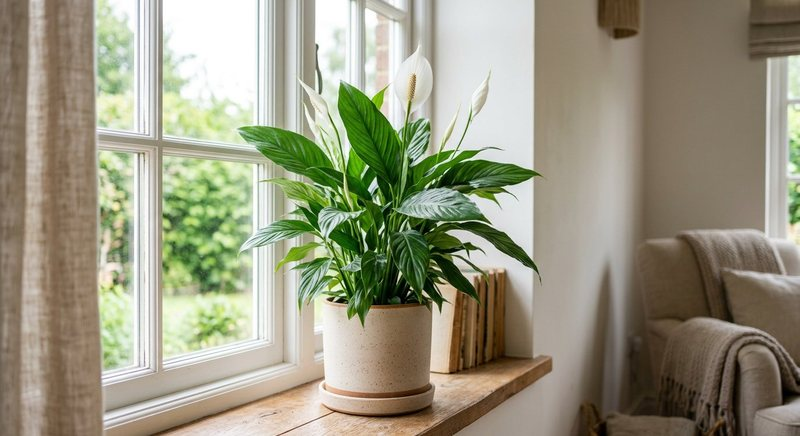

Виды растений · 5 мин чтения
Удобрение для спатифиллума: как подкармливать женское счастье
Спатифиллум любит ровную влажность и яркий рассеянный свет, но не относится к растениям, которым нужна агрессивная подкормка. Коричневые кончики и отсутствие цветков чаще требуют проверки воды, света и корней.
Материал обновлён 24.10.2026 · Справочная информация, не заменяет инструкцию на упаковке.

Свет и влажность субстрата — основа для спатифиллума
В глубокой тени спатифиллум может сохранять листья, но хуже цвести. Для регулярного появления белых покрывал ему обычно нужен яркий рассеянный свет без обжигающего полуденного солнца. Субстрат поддерживают равномерно влажным, не превращая горшок в болото: корни нуждаются и в воде, и в воздухе. Сильное поникание листьев после пересушки — сигнал срочно выровнять полив, а не вносить концентрат в сухой ком.
После полива лишнюю воду из поддона убирают. Если растение поникло при мокром субстрате, проблема может быть в корнях или температуре, а не в жажде. В такой ситуации ещё один обильный полив с удобрением опасен. Сначала проверьте дренаж, запах субстрата и состояние корней, затем возвращайтесь к плановому уходу.
Коричневые кончики: почему не стоит сразу менять удобрение
Сухие кончики у спатифиллума связывают с пересыханием, низкой влажностью воздуха, качеством воды и накоплением солей. По одному симптому нельзя определить, какого элемента не хватает или слишком много. Посмотрите на динамику: страдают ли только старые листья, появляются ли края на новом приросте и ухудшается ли состояние после подкормок. Фото и журнал полива полезнее мгновенной смены нескольких средств.
Если на поверхности субстрата виден светлый налёт, а листья реагируют после раствора, остановите внесение и проверьте режим. Дальнейшие действия при подозрении на избыток описаны в статье о перекорме растений. Повреждённые кончики не восстановятся; результат исправления ухода оценивают по новым листьям.
- свет яркий рассеянный, а не глубокая тень;
- субстрат влажный равномерно, без застоя воды;
- растение не пересушено перед внесением раствора;
- дата предыдущей подкормки и концентрация известны;
- новые листья выходят без сухих краёв.
Как подкармливать спатифиллум без избытка солей
Выбирайте удобрение для комнатных или цветущих растений и точно соблюдайте норму. Спатифиллум не нужно стимулировать увеличенной дозой при появлении цветоноса. Приготовьте раствор на измеренный объём воды по логике статьи как развести жидкое удобрение, внесите по субстрату и слейте лишнее. Если грунт новый и заправлен питанием, дату первой подкормки определяют инструкции субстрата и удобрения.
Семяздрав предназначен продавцом для комнатных растений и цветов; конкретную схему для спатифиллума сверяйте с актуальной этикеткой. Не смешивайте его с другим комплексом в один полив и не сокращайте интервал только потому, что растение быстро пьёт воду летом. Частота влажных поливов и частота питания — разные графики.
Почему спатифиллум не цветёт
Молодое или недавно делённое растение сначала наращивает корневую систему и листья. В тени оно может оставаться декоративно-лиственным, но не давать покрывал. Также важны размер горшка, температура и отсутствие постоянного стресса от пересушек. Избыток питания не заменяет свет и может дать зелёную массу без ожидаемого цветения; общие причины разобраны в статье о подкормке цветущих растений.
Отцветшее покрывало постепенно зеленеет и стареет — это естественный этап, а не обязательный признак ошибки удобрения. Удаляйте цветонос по состоянию, не повреждая точку роста. Если растение несколько сезонов не цветёт при хорошем свете, оцените возраст, тесноту горшка и корни. Пересадка с обновлением разрушенного субстрата может быть важнее новой формулы подкормки.
Пересадка и деление без спешки с первой дозой
Спатифиллум пересаживают, когда корни освоили объём и вода стала уходить слишком быстро или субстрат уплотнился. При делении куста каждая часть должна иметь здоровые корни и точку роста. После пересадки поддерживайте ровную влажность и рассеянный свет; питание возвращают по заправке новой смеси и этикетке, как описано в материале о подкормке после пересадки.
Ведите заметки по цветению: месяц появления покрывал, место горшка и график питания. Через сезон будет видно, что именно изменилось в вашей квартире. Такой журнал полезнее универсального совета кормить чаще: спатифиллум особенно ясно показывает, что стабильная вода и свет дают базу, а удобрение лишь поддерживает уже работающую систему.
Частые вопросы
Как часто удобрять спатифиллум?
По инструкции выбранного средства и в период активного роста. Растение чувствительно к избытку солей, поэтому увеличивать частоту или концентрацию нельзя.
Почему у спатифиллума сохнут кончики листьев?
Возможны пересушка, сухой воздух, качество воды, соли и проблемы корней. Проверьте уход целиком и оценивайте новые листья после исправления условий.
Почему спатифиллум опустил листья после полива?
Если субстрат мокрый, проверьте корни, температуру и дренаж. Поникание не всегда означает жажду; дополнительный раствор удобрения в такой момент не нужен.
Можно ли опрыскивать спатифиллум удобрением?
Только при прямом указании внекорневого способа и нормы на этикетке. Не распыляйте раствор на цветки и не используйте опрыскивание как замену поливу.